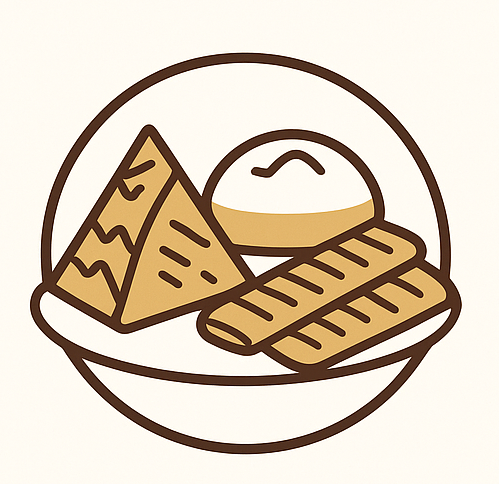
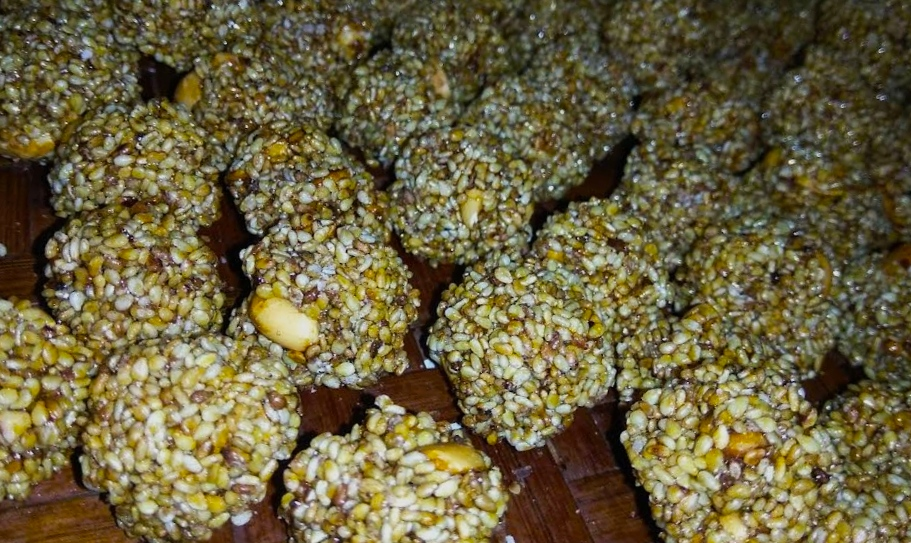
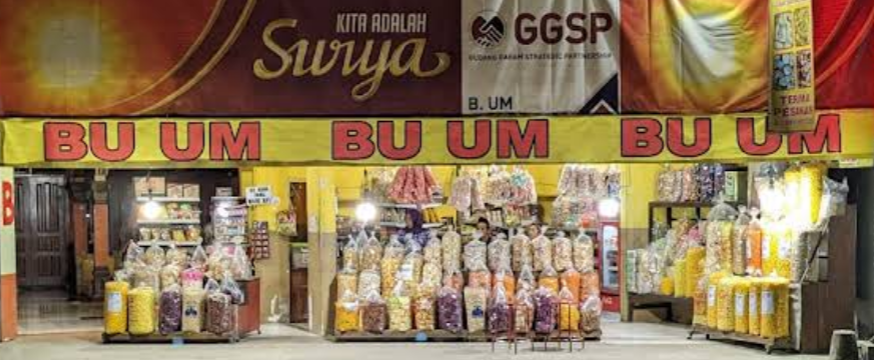

Manis • Gurih • Tradisional

Geti Wijen adalah camilan tradisional khas Trenggalek berbahan dasar gula merah, kacang tanah, dan wijen. Teksturnya padat namun renyah dengan rasa manis gurih yang autentik, menghadirkan kelezatan khas tempo dulu di setiap gigitannya.
Geti Wijen sudah menjadi bagian dari warisan kuliner masyarakat Trenggalek sejak lama. Camilan ini biasanya disajikan pada acara hajatan atau dijadikan oleh-oleh khas daerah. Perpaduan manis gula merah, gurihnya kacang tanah sangrai, dan aroma wijen yang harum menjadikan Geti Wijen disukai berbagai kalangan. Kini, camilan ini mudah ditemukan di berbagai toko oleh-oleh di Trenggalek.
Rasa manis Geti Wijen berpadu sempurna dengan minuman hangat.
Agar tetap renyah dan tidak melempem, simpan dalam toples rapat.
Cocok sebagai camilan saat berkumpul bersama orang terdekat.
Geti Wijen tahan lama dan mudah dikemas cocok sebagai oleh-oleh khas Trenggalek.
Ingin membeli Geti Wijen langsung dari sumbernya? Berikut beberapa lokasi toko oleh-oleh terpercaya di Trenggalek.

Toko Bu Um pusat oleh-oleh khas Trenggalek, RT.33/RW.14, Kranding, Bendorejo, Kec. Pogalan, Kabupaten Trenggalek, Jawa Timur 66371
Hubungi via WhatsApp